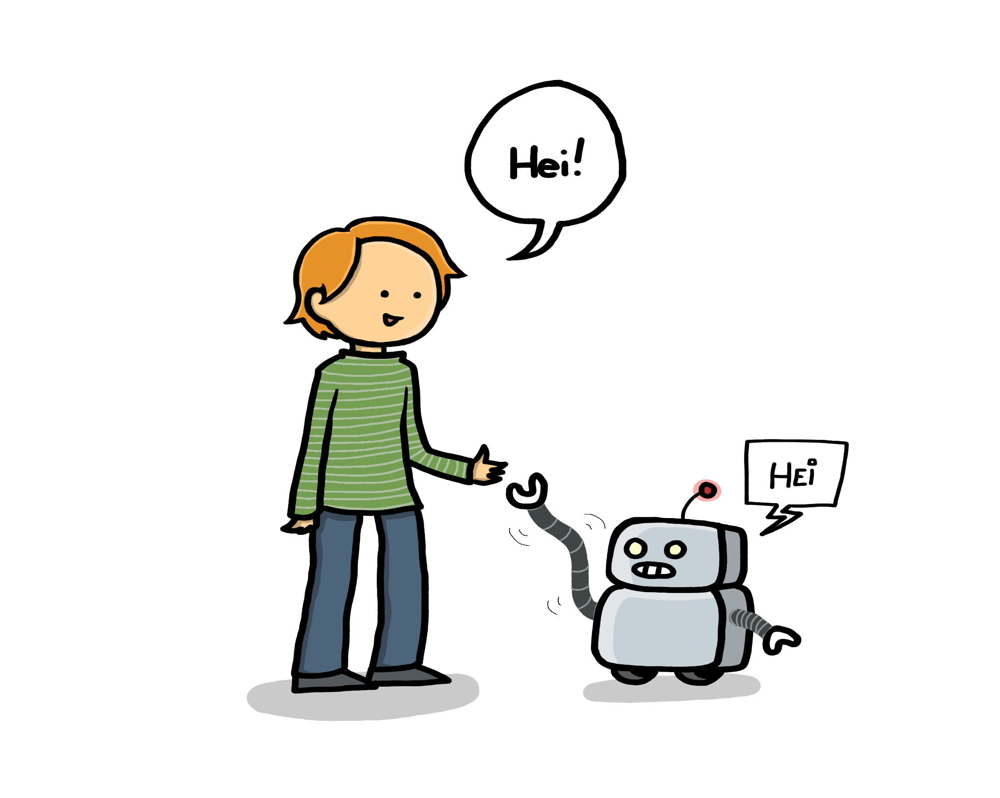

Velkommen til kurset: Introduksjon til kunstig intelligens
{kind=link}

Se for deg et rom fullt av ekstra ansatte som er klare til å hjelpe deg! Ansatte som raskt kan lese, analysere, behandle, oppsummere, sortere, skrive utkast, oversette, forenkle, lage forslag eller hente fram relevant informasjon for deg. Kunstig intelligens kan være dette rommet med ekstra ansatte. Disse digitale hjelperne kan for eksempel:
- lage utkast som du kan kvalitetssikre og forbedre
- gi deg oversikter før du går i dybden
- foreslå ideer før du tar beslutninger
De digitale hjelperne jobber raskt og kan behandle store mengder data, men de har ikke din ekspertise eller erfaring fra å jobbe på UiO. De har heller ikke etisk dømmekraft, faglig skjønn eller bevissthet rundt datasikkerhet. Derfor må du med egen menneskelig innsikt:
- vurdere KI-ens svar
- vurdere hvilke oppgaver som er trygge å bruke KI til
- sikrer at regelverk blir ivaretatt
- tar det endelige ansvaret for beslutninger
Samtidig, som statsansatt forvalter du fellesskapets ressurser på vegne av samfunnet, og du må være bevisst på å ta bruk ny teknologi på en måte som ivaretar tilliten mellom forvaltningen og samfunnet. Vi håper dette kurset gir deg kompetanse til å begynne å utforske mulighetene med kunstig intelligens på en god og trygg måte.
Slik jobber du med kurset
- Rekkefølge: Start med kapittel 1 og jobb deg fremover - innholdet bygger på hverandre
- Refleksjonsoppgaver og øvinger: Du vil møte refleksjonsspørsmål og øvelser underveis - bruk tid på disse!
- Du vil finne fordypningsstoff i flere av kapitlene. Klikk på disse om du vil gå litt i dybden!
- Til slutt har vi laget noen øvingsoppgaver som du kan jobbe med i tiden fremover. Disse kan du laste ned slik at du i ro og mak kan jobbe med de.
Godt kurs!